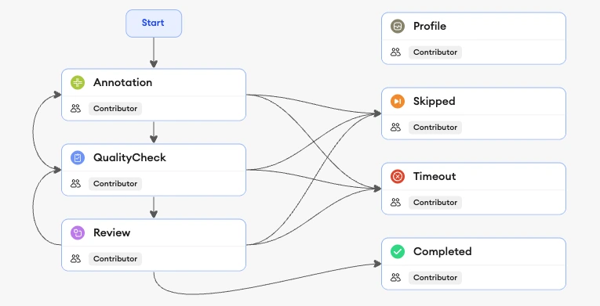
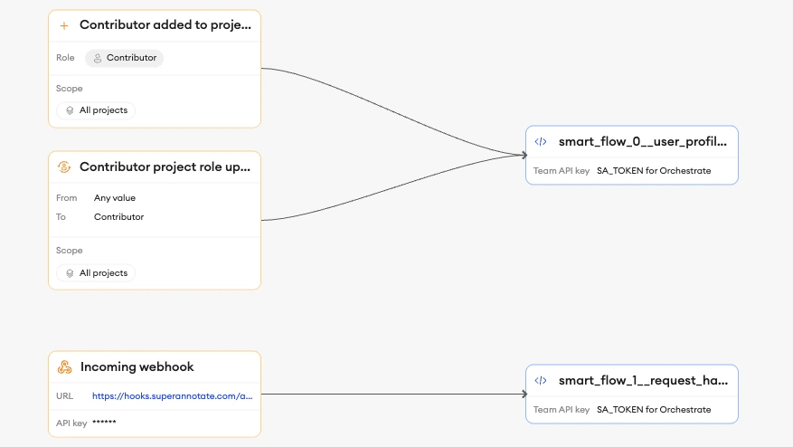
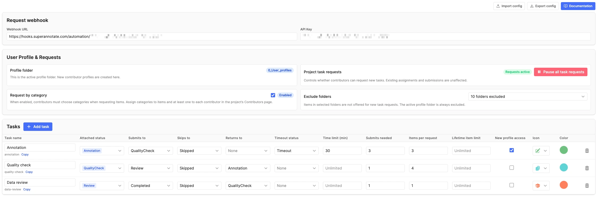
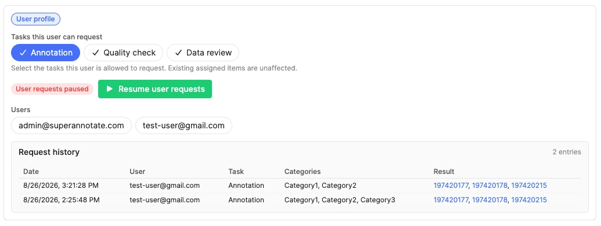
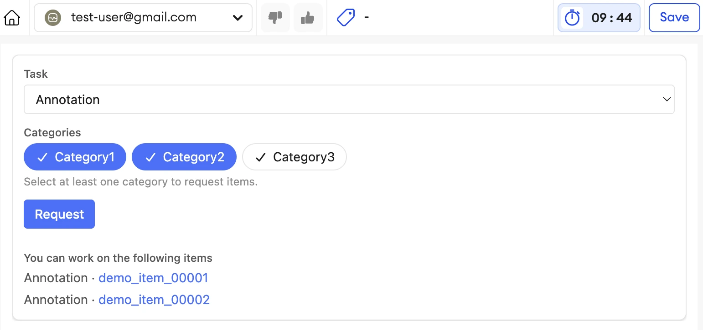
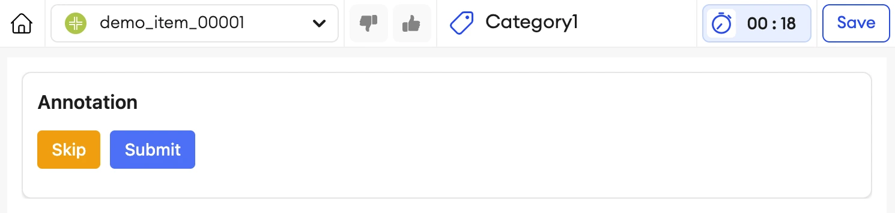

Overview
Smart Workflow helps a project distribute work through defined tasks instead of manual item assignment. Administrators configure the workflow once, contributors receive a personal profile item, and contributors request work when they are ready.
What Smart Workflow provides
- Task-based work distribution — organize project work by workflow status, request size, lifetime limits, and optional category selection.
- Contributor profile items — each Contributor receives a dedicated item where admins manage task access and contributors request their next work.
- Safe request handling — requests validate current access, request limits, project state, and available items before assignment.
- Work-item controls — contributors can Submit, Skip, or Return assigned work; tasks can require several contributors to submit before an item advances.
- Operational visibility — profile request history and Orchestrate run history help administrators understand what happened.
How it works
- An administrator completes the preparations of the workflow requirements, sets up the automation orchestration (once per team), and publishes the project with component configuration.
- When a user is added as a Contributor, automation creates or recovers that user’s profile item.
- An administrator grants or changes access to the tasks on the profile, or relies on default task seeding mechanism for new profiles.
- The contributor opens their profile, chooses a task, and requests work.
- Automation finds and assigns eligible items. Contributors then work through those items with the configured actions.
Setup & Configuration
Configuration connects the project workflow, user-profile component, and two automation actions. Complete this setup before adding Contributors to the project.
Workflow requirements
Start by creating a custom workflow under Team Setup → Workflows.
- The workflow must include a status named Profile for profile items.
- The workflow must have a single Contributor role. Admin role is automatically available on all projects and does not need to be created.
- Contributors must have access to every status in your Workflow.
- Only the supported workflow-role structure should remain. The configuration screen identifies missing requirements and extra workflow roles before allowing setup.
Below is an example of a workflow with all the requirements met.

Install the orchestration
- Download the Smart Workflow orchestration template.
- Import it into Orchestrate for the same team as the project.
- On the import screen, select the Contributor role and a Team API key to mount them on the template.
- Confirm the contributor-added and contributor-role-updated triggers point to the profile handler action.
- Confirm that the Team API key is mounted on both actions.
Below is an example of the finished orchestration with the profile-provisioning and request-handler actions in place.

- Copy the incoming-webhook URL and API key from the request handler setup into the component’s Request webhook card.
The template contains the profile-provisioning action and the request-handler action. It uses a placeholder for the Team API key; the shared DynamoDB lock configuration is intentionally included.
Configure the component
Below is an example of the complete configuration screen. Complete all the sections, then select Next and Update to publish the configuration.

Request webhook
In the Request webhook section, paste the incoming-webhook URL and API key from the created orchestration in your team. Both fields are required: if either is blank, contributors see an administrator-contact message and cannot select a task, category, or Request button.
User Profile & Requests
- Profile folder — profile items use a dedicated folder, normally
0_User_profiles. The live folder name is shown here, and its resolved ID keeps it recognized after a rename once configuration has been published. - Project task requests — pauses new requests project-wide without affecting already assigned work. It is independent from pause state for individual contributors.
- Request by category — requires contributors to select one or more categories and limits new assignments to matching items.
- Exclude folders — prevents work items from selected project folders from being assigned through requests. The active profile folder is always excluded from this selector.
Tasks
Each task represents a portion of the workflow. Its read-only ID is used by contributor profile access and request history, so existing task IDs remain stable while newly created tasks have IDs normalized from a task name.
| Setting | Purpose |
|---|---|
| Attached statuses | Defines which work items belong to the task. Each workflow status can be attached to only one task. |
| Submits to / Skips to / Returns to | Defines where an item moves after each contributor action. Each destination must be an available Contributor transition from every status attached to this task. |
| Timeout status / Time limit | Optionally move an overdue regular work item automatically. Items are considered overdue after the active Editor time logged through telemetry exceeds the configured time limit. |
| Submits needed | Number of contributor submissions required before Submit advances the item. Needed for consensus workflows where multiple contributors must submit before an item advances. |
| Items per request | Maximum number of items assigned by one request, from 1 to 20. |
| Lifetime item limit | Optional cumulative number of items a profile may receive for this task. |
| New profile access | Seeds this task only when a new profile is created; it never changes existing profiles. |
Import and export
Export downloads the complete component configuration, including webhook URL and API key. Store it securely. Import replaces the current configuration only after confirmation and takes effect only after Next and Update.
- Folder IDs are retained only when they belong to the current project.
- Status selections unavailable in the current workflow are removed.
- Existing contributor profiles and request history are not migrated. Avoid importing a different task list or task IDs into a project already in use.
- Webhook settings are imported unchanged. Verify they belong to an orchestration in the current team before publishing.
Contributor Profiles
A contributor profile is a dedicated item where the contributor requests work and an administrator manages the contributor’s task access.
Profile creation and recovery
The profile handler runs when a user is added to the project as a Contributor or their project role changes to Contributor. It first confirms that the published form includes Smart Workflow, then finds or creates the profile item.
- A new profile is created in the profile folder with the Profile status.
- If a matching unassigned profile item already exists, it is recovered and assigned to the contributor.
- If the matching item is already assigned to the same contributor, it is retained.
- If it belongs to another contributor, provisioning fails instead of taking over that person’s profile.
Default task access
Tasks marked New profile access are copied into a profile only at the moment it is created. This is a starting point, not a live rule: changing this setting later never modifies an existing profile.
This makes defaults useful for intentionally onboarding contributors in batches:
- Select the task or tasks that the first group should receive by default, then publish the configuration.
- Add the first group as Contributors. Each new profile is created with access tothose selected tasks.
- Change the default selection, publish again, and then add the next group. The next group receives the new defaults; the first group keeps its existing access.
What administrators manage
Administrators can update a contributor’s profile at any time. Each task-access or pause change is saved immediately, and concurrent contributor request history is preserved.
- Allowed tasks — selects which current tasks this contributor may request.
- Pause requests — blocks new requests for this contributor while keeping their already assigned work available.
- Request history — shows successful, empty, and rejected request attempts so administrators can see the contributor’s request activity.
Profile folder naming and recovery
Keep the automatically created 0_User_profiles folder name whenever possible. Folder renames are supported only after the folder’s live ID has been captured by opening and publishing configuration; renaming during setup can create an unintended second profile folder.
If a rename is necessary, use this sequence:
- Open the configuration screen and confirm that it detects the current profile folder.
- Publish configuration so the live folder ID is stored.
- Rename the folder in SuperAnnotate.
- Reopen configuration, verify the renamed folder is detected, and publish again before inviting more contributors.
Once a live ID is stored, Smart Workflow continues to recognize that folder after its name changes. If it is deleted, the next configuration or provisioning flow attempts recovery by the configured name and may create or resolve a replacement for future profiles.
0_User_profiles folder, splitting future profiles from the renamed folder.Working Items & Requests
Administrator profile view
On a user-profile item, administrators see task access chips, the contributor’s request-pause state, the request history, and the list of people who opened the item. Task and pause changes save immediately, and the profile refreshes when another session made an overlapping access change.
Below is an example of the administrator view for a contributor profile.

Contributor requests
Contributors open their own profile, choose one granted task, choose categories when category-based reqeust is enabled, and select Request. The system verifies the current profile, task access, project/user pause state, request caps, and candidate availability before assigning work. A request records the chosen task, categories when applicable, and its final outcome in the profile history.
Request controls are unavailable when the webhook has not been configured, the contributor or project is paused, no task is granted, a task cap or lifetime limit is reached, or required categories have not been selected.
Below is an example of the contributor profile, including the task selector, category selection, Request button, and assigned-item queue.

Request outcomes
| Outcome | What the contributor sees |
|---|---|
| Items assigned | The profile reloads and the assigned items appear as links. |
| No eligible items | A neutral message explains that no items are currently available for the task. |
| Changed access, pause, categories, or limits | A specific message explains the current state and may block relevant controls until the page is refreshed, or accesses are updated by an admin. |
| Task temporarily busy | A retryable message asks the contributor to try again shortly. Can happen when a very large number of contributors are requesting work simultaneously. |
| Technical or configuration problem | A generic failure appears for the contributor; administrators can inspect the failed Orchestrate run. |
Working on assigned items
Every completed action unassigns the item from the current contributor. This returns it to the workflow for its configured next step, or lets another contributor take it when more submissions are needed.
Below is an example of a regular work item with its available contributor actions.

- Submit validates the annotation form and records the contributor’s submission. When the configured number of distinct contributors has submitted, it moves the item to the task’s Submit status. An earlier Submit still unassigns the item so another contributor can provide the next required submission.
- Skip moves the item to the task’s Skip status without form validation, then unassigns it.
- Return moves the item to the task’s Return status without form validation, then unassigns it.
- Timeout, when configured for a regular work item, automatically moves it to the task’s Timeout status and unassigns it when the time limit is reached. It does not apply to profile items.
After a successful action, Smart Workflow automatically moves the contributor to their next assigned working item, or to their profile when no working items remain.
Timeout reminders
A two-to-ten-minute time limit shows one reminder halfway through. A longer limit shows two reminders: one halfway through and one later reminder. Reminders only require acknowledgement; they do not extend the time limit. The item still moves to its Timeout status when the limit is reached, even if a reminder has not been acknowledged.
Working from a stale page
Profile and request changes can occur while a contributor has a profile open. Requests always use the current server-side profile state, and request-history saves preserve newer administrator task and pause changes. When displayed controls are no longer current, Smart Workflow explains what changed and asks the contributor to refresh the profile page.
Troubleshooting & FAQ
Why was no profile created?
Confirm the user was added as a Contributor, the workflow meets the required structure, the user-profile component has been published on the project form, and the profile-provisioning action is enabled with a Team API key. Then inspect the corresponding Orchestrate run.
Why did a default task not update an existing profile?
New profile access is seeded only when a profile is first created. Republishing a different default changes only future profiles; update the existing contributor’s Allowed tasks directly when their access needs to change.
Why does a contributor still see old profile access?
The contributor has an older copy of the profile page open. Refresh after an administrator changes Allowed tasks or pauses requests. If they submit a stale request, Smart Workflow keeps the administrator’s latest profile changes and shows a message asking them to refresh.
Why is Request disabled?
Request is disabled when the webhook URL or API key is blank, requests are paused for the project or the individual contributor, no task is granted, the task cap or lifetime limit has been reached, or category selection is required but incomplete. Refresh after an administrator changes configuration or profile access.
Why did no items arrive?
A successful “no items available” outcome means the request was valid but no unassigned candidate matched the task’s statuses, category selection, folder exclusions, and opened-item rules. Add eligible work items or adjust the configuration.
Why did the request fail?
Most contributor-facing failures need an administrator to review the request-handler Orchestrate run. Common causes include a broken published task configuration, unavailable workflow status, invalid webhook connection, missing Team API key, or a platform/API problem.
Can I use webhook settings from another team?
No. A cross-team webhook can receive the request but its team-scoped automation cannot read the foreign project/item and the request fails. Exported webhook settings should only be imported into projects on the same team.
What if the profile folder was deleted or renamed?
A published folder ID survives renaming. A deleted folder is recovered by name when possible; otherwise a replacement profile folder may be created for future profiles. Avoid renaming the folder, especially before configuration has saved its ID. If you must rename it, follow the recommended sequence, then reopen and publish configuration before inviting more contributors.
Can I replace configuration on an active project?
You can, but avoid replacing the task list or task IDs while existing profiles are in use. Their granted access and historical requests are not migrated to new task IDs. Export the current configuration first, make the change deliberately, and update affected profiles if needed.
What is safe to retry?
A temporarily busy request and a “no items available” result are safe to retry later. A failed Orchestrate run should be inspected and corrected before repeated retries. Profile provisioning is designed to recover a matching unassigned profile safely, but never takes a profile from another contributor.